Kai Mäder
Tonmeister · Berlin & Linz
Über mich
Zwischen Orchestergraben und Regieraum
Meine Arbeit als Tonmeister begann bereits während meines Kontrabass-Studiums an der Hochschule für Musik und Theater Leipzig. Seitdem habe ich im Studio und auf Live-Bühnen an Hunderten von Aufnahmen, Musicals, Opern, Konzerten und TV-Produktionen in Deutschland, Österreich und der Schweiz mitgewirkt. Als Bassist und Gitarrist kenne ich dabei auch die Perspektive der Musikerinnen und Musiker.
Ein Schwerpunkt liegt dabei seit 2010 im Musiktheater: Seit 2022 leite ich die Abteilung Ton und Video am Musiktheater Linz, zuvor war ich am Theater Magdeburg und am Landestheater Neustrelitz tätig.
Ich begleite Produktionen von der ersten Idee bis zur Aufführung – von der technischen Planung über das Sounddesign bis zur Umsetzung in Ton und Video. Mit Erfahrung, Sorgfalt und künstlerischem Feingefühl.
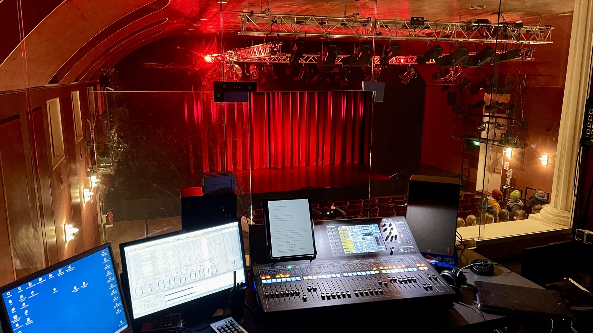
Leistungen
Was ich für Sie mache
Musiktheater & Oper
Tonregie, Mikrofonierung und Beschallung für Musical, Oper und Theater – im Repertoire wie auf Tour.
Sounddesign für Musicals
Eigene Klangwelten für Musical- und Theaterproduktionen: Atmosphären, Effekte und Zuspielungen – vom Konzept über Programmierung und Wiedergabesystem bis zur Einrichtung im Haus und auf Tour.
Live Sound & Konzert
FOH- und Monitormischung für Konzerte, Festivals, Galas und Messen, inklusive Systemplanung.
Recording, Mix & Mastering
Aufnahmen von Klassik bis Rock, im Studio oder vor Ort, bis zum fertigen Master.
Broadcast
Tonmischung für Radio- und TV-Produktionen, Livestreams und Aufzeichnungen.
Pre- & Postproduktion
Playbacks, Zuspielungen, Sounddesign und Nachbearbeitung für Bühne und Video.
Referenzen
Diskografie
Alben, an denen ich als Tonmeister beteiligt war – von Klassik und Chor über Jazz bis Blues und Rock.
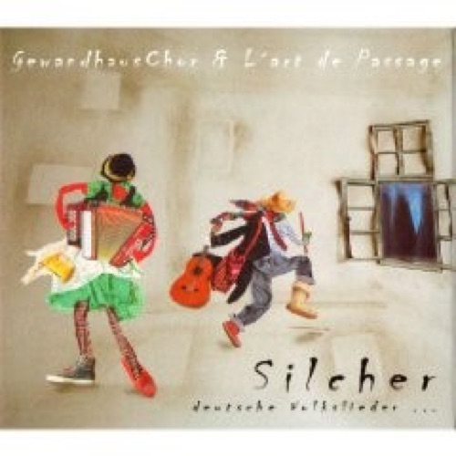
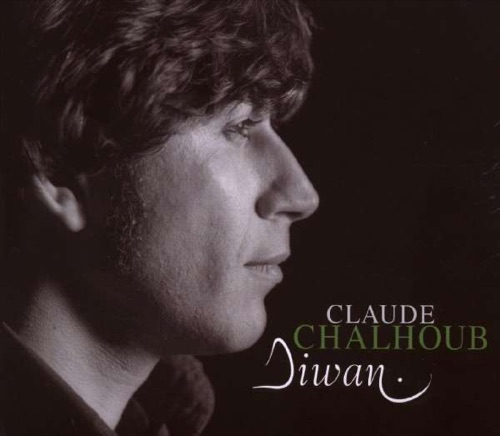


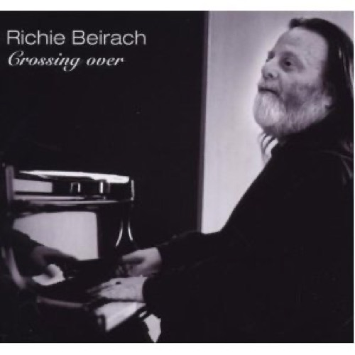


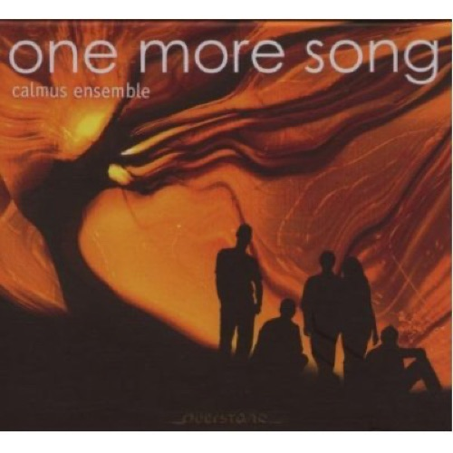

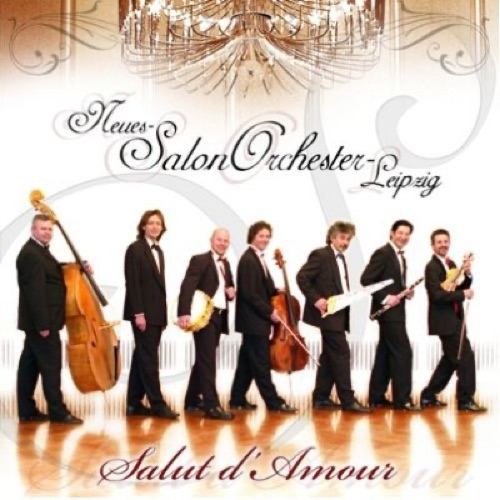


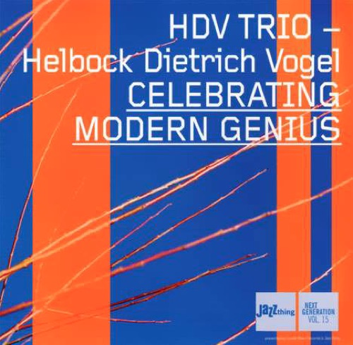
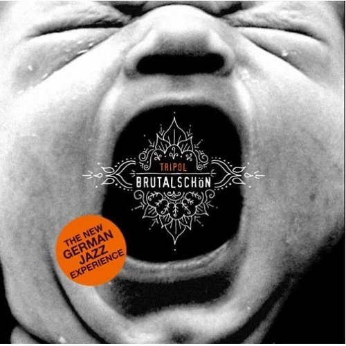
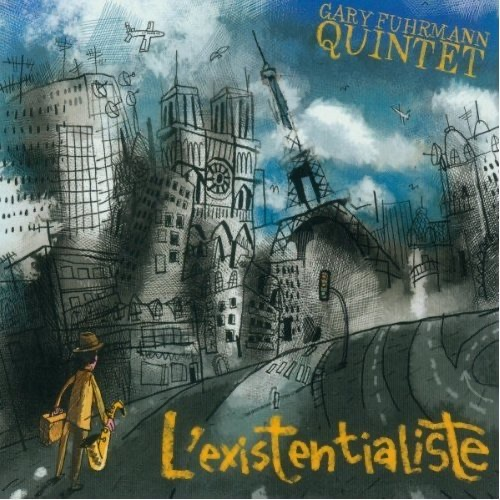
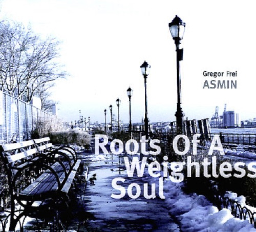

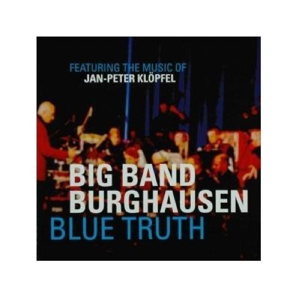
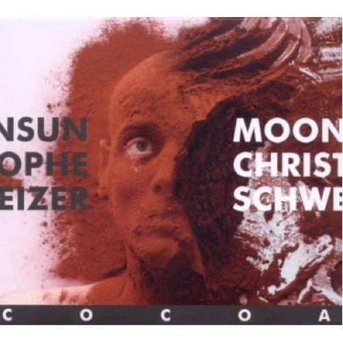
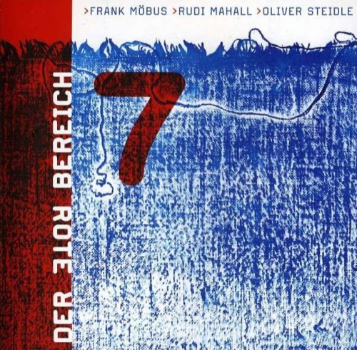
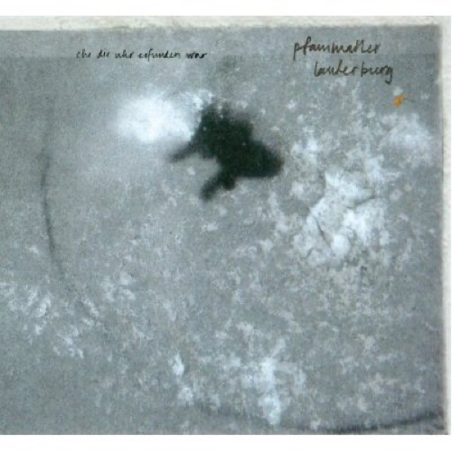


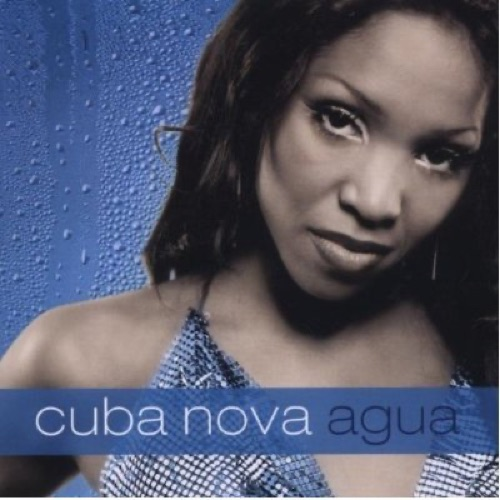
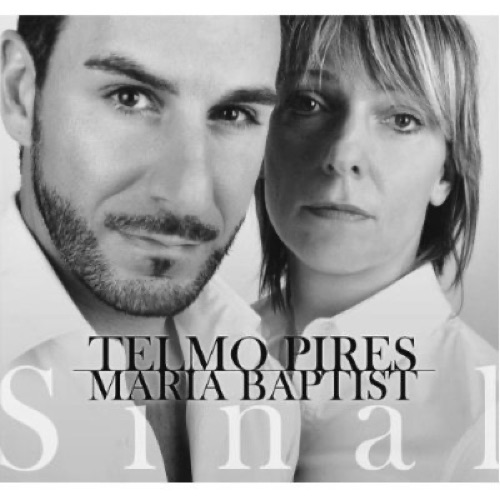


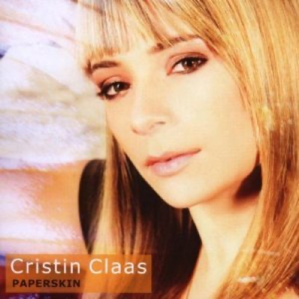
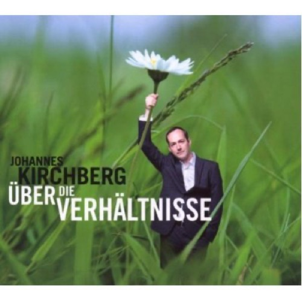


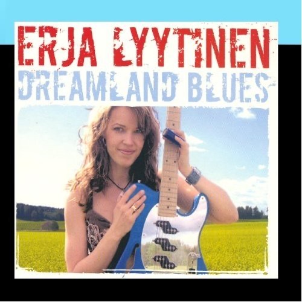

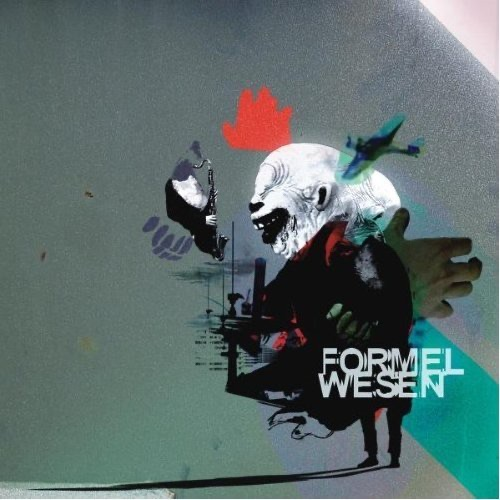

Hören & Sehen
Videos
Die Videos werden erst nach Klick von YouTube bzw. Vimeo geladen. Dabei werden Daten an diese Anbieter übertragen – siehe Datenschutz weiter unten.
Kontakt
Lassen Sie uns über Ihr Projekt sprechen
Ob Sounddesign für ein Musical, Tonregie im Theater, ein Konzert oder eine Albumaufnahme – erzählen Sie mir von Ihrem Projekt. Ich freue mich auf Ihre Nachricht.
- info@kaima.at
- Telefon
- +43 664 1465124
- Studio
- Berlin-Kreuzberg
Rechtliches
Impressum
Angaben gemäß § 5 DDG
Kai Mäder
Gneisenaustr. 65
10961 Berlin
E-Mail: info@kaima.at
Telefon: +43 664 1465124
Steuernummer: 14/429/03586
Verantwortlich für den Inhalt
Kai Mäder, Anschrift wie oben.
Haftung für Inhalte
Die Inhalte dieser Seiten wurden mit größter Sorgfalt erstellt. Für die Richtigkeit, Vollständigkeit und Aktualität der Inhalte kann ich jedoch keine Gewähr übernehmen. Als Diensteanbieter bin ich für eigene Inhalte auf diesen Seiten nach den allgemeinen Gesetzen verantwortlich.
Haftung für Links
Diese Website enthält Links zu externen Websites Dritter, auf deren Inhalte ich keinen Einfluss habe. Für die Inhalte der verlinkten Seiten ist stets der jeweilige Anbieter oder Betreiber verantwortlich. Zum Zeitpunkt der Verlinkung waren keine rechtswidrigen Inhalte erkennbar. Bei Bekanntwerden von Rechtsverletzungen werden derartige Links umgehend entfernt.
Urheberrecht
Die auf dieser Website veröffentlichten Inhalte, Fotos, Tondokumente und Videosequenzen unterliegen dem deutschen Urheberrecht. Die Rechte an den abgebildeten Albumcovern liegen bei den jeweiligen Künstlern und Labels. Vervielfältigung, Bearbeitung und Verbreitung außerhalb der Grenzen des Urheberrechts bedürfen der schriftlichen Zustimmung des jeweiligen Rechteinhabers.
Werbung
Der Nutzung der im Impressum veröffentlichten Kontaktdaten zur Übersendung nicht ausdrücklich angeforderter Werbung wird hiermit widersprochen.
Datenschutzerklärung
1. Verantwortlicher
Kai Mäder
Gneisenaustr. 65, 10961 Berlin
E-Mail: info@kaima.at
2. Das Wichtigste in Kürze
Diese Website verwendet keine Cookies, keine Analyse- oder Tracking-Tools und keine Schriftarten oder Skripte von Drittanbietern. Daten an YouTube oder Vimeo werden nur übertragen, wenn Sie ein Video aktiv per Klick starten.
3. Hosting über GitHub Pages
Diese Website wird bei GitHub Pages gehostet, einem Dienst der GitHub Inc., 88 Colin P. Kelly Jr. St., San Francisco, CA 94107, USA. Beim Aufruf der Seiten verarbeitet GitHub technisch notwendige Daten, insbesondere Ihre IP-Adresse, Datum und Uhrzeit des Zugriffs, die aufgerufene Seite sowie Browser- und Betriebssysteminformationen (Server-Logfiles). Dies dient der sicheren und stabilen Auslieferung der Website.
Rechtsgrundlage ist mein berechtigtes Interesse an einer zuverlässigen Darstellung der Website (Art. 6 Abs. 1 lit. f DSGVO). Eine Übermittlung in die USA ist möglich; GitHub ist unter dem EU-US Data Privacy Framework zertifiziert. Weitere Informationen: Datenschutzerklärung von GitHub.
4. Kontakt per E-Mail oder Telefon
Wenn Sie mich per E-Mail oder Telefon kontaktieren, verarbeite ich Ihre Angaben (z. B. Name, E-Mail-Adresse, Telefonnummer, Inhalt der Anfrage) ausschließlich zur Bearbeitung Ihrer Anfrage. Rechtsgrundlage ist Art. 6 Abs. 1 lit. b DSGVO (Anbahnung oder Durchführung eines Vertrags) bzw. Art. 6 Abs. 1 lit. f DSGVO. Die Daten werden gelöscht, sobald sie nicht mehr erforderlich sind und keine gesetzlichen Aufbewahrungspflichten entgegenstehen.
5. Eingebettete Videos (YouTube, Vimeo)
Auf dieser Website können Videos von YouTube (Google Ireland Limited, Gordon House, Barrow Street, Dublin 4, Irland) und Vimeo (Vimeo.com, Inc., 330 West 34th Street, New York, NY 10001, USA) abgespielt werden. Die Videos werden erst geladen, wenn Sie auf das jeweilige Vorschaubild klicken. Erst dann wird eine Verbindung zu den Servern des Anbieters hergestellt und es werden Daten wie Ihre IP-Adresse übertragen. YouTube-Videos werden im erweiterten Datenschutzmodus (youtube-nocookie.com) eingebunden, Vimeo-Videos mit dem Parameter „Do Not Track“.
Rechtsgrundlage ist Ihre Einwilligung durch den Klick (Art. 6 Abs. 1 lit. a DSGVO, § 25 Abs. 1 TDDDG). Weitere Informationen: Datenschutzerklärung von Google, Datenschutzerklärung von Vimeo.
6. Ihre Rechte
Sie haben jederzeit das Recht auf Auskunft (Art. 15 DSGVO), Berichtigung (Art. 16), Löschung (Art. 17), Einschränkung der Verarbeitung (Art. 18), Datenübertragbarkeit (Art. 20) und Widerspruch (Art. 21 DSGVO). Eine erteilte Einwilligung können Sie jederzeit mit Wirkung für die Zukunft widerrufen. Wenden Sie sich dazu einfach an die oben genannte E-Mail-Adresse.
Zudem haben Sie das Recht, sich bei einer Datenschutz-Aufsichtsbehörde zu beschweren, zum Beispiel bei der Berliner Beauftragten für Datenschutz und Informationsfreiheit.
Stand: November 2026